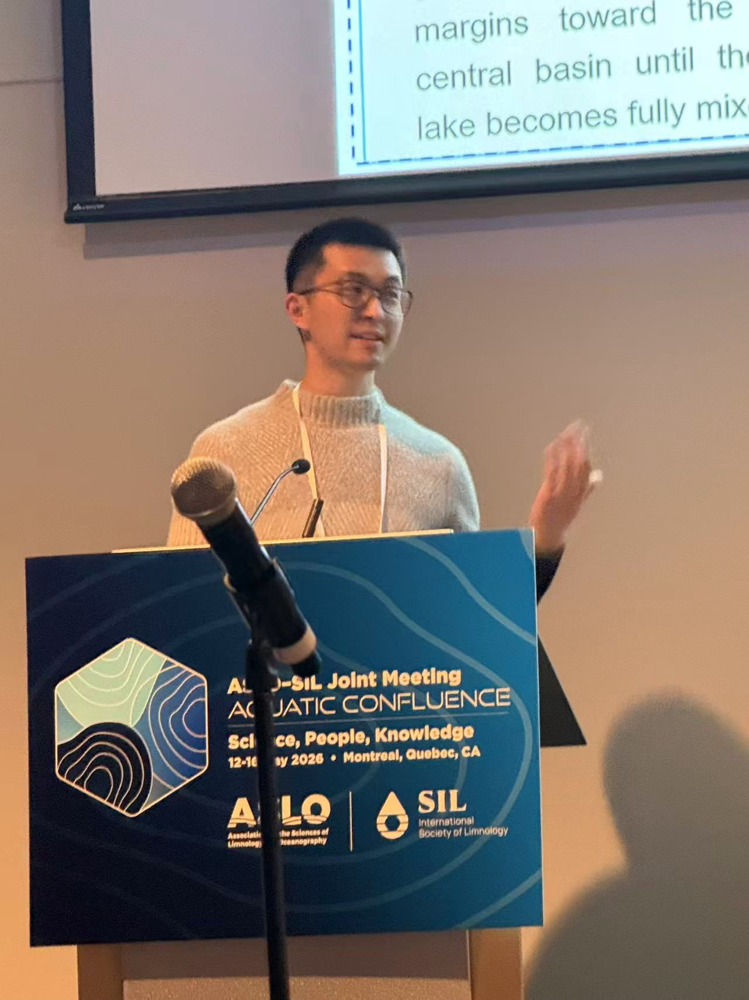

I am currently a postdoctoral fellow in the Department of Physical and Environmental Sciences at the University of Toronto. My research focuses on physical limnology, with a specific focus on dissolved oxygen dynamics, lake thermal structure, and fish habitat use in seasonally ice-covered lakes.
I received my PhD degree from Tsinghua University, where I worked on hydro-thermodynamic processes in regulated river-reservoir systems.

2024.04 – Present
Postdoctoral Fellow, Department of Physical and Environmental Sciences,
University of Toronto, Toronto, Canada
Supervisor: Prof. Mathew Wells
2018.09 – 2024.01
Doctor of Engineering, Department of Hydraulic Engineering,
Tsinghua University, Beijing, China
Supervisor: Prof. Binliang Lin